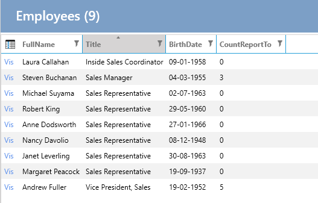

Mapper - Custom List-property
From the previous example Mapper, a custom property was created on the data entity and then that property was used throughout the application.
It may be that there is only a need to create a custom property for a view and it is not desired to create the property on the data entity, but only the model entity.
Requirement: On the list of Employees, it should be displayed how many Employees an Employee has under them.
Task: Create a property on the EmployeesList class that counts ReportTo.
Implementation
1. Create Property
- Select "User Interface".
- Select "Employees".
- Select the "List" tab.
- Under "Code Tasks" select "Entity - Model" and click on "Add Code".
- Create a property as below:
public partial class EmployeesList
{
public int CountReportTo { get; set; }
}
2. Make Mapping
In "Code Tasks" select "Mapper" and implement the following (FullName mapping is from a previous example):
public partial class EmployeesListMapperProfile
{
partial void AfterConfiguration(IMappingExpression<Employees, EmployeesList> mapping)
{
mapping.ForMember(e => e.CountReportTo, opt => opt.MapFrom(e => e.Employees2.Count));
}
}
Other Examples
- Mapping a concatenated string property:
public partial class EmployeesListMapperProfile
{
partial void AfterConfiguration(IMappingExpression<Employees, EmployeesList> mapping)
{
// ...existing code...
mapping.ForMember(e => e.FullName, opt => opt.MapFrom(e => e.FirstName + " " + e.LastName));
// ...existing code...
}
}
- Mapping a custom formatted string property:
public partial class EmployeesListMapperProfile
{
partial void AfterConfiguration(IMappingExpression<Employees, EmployeesList> mapping)
{
// ...existing code...
mapping.ForMember(e => e.FullAddress, opt => opt.MapFrom(e => e.Address + ", " + e.City));
// ...existing code...
}
}
- Mapping a property with null-coalescing operators:
public partial class EmployeesListMapperProfile
{
partial void AfterConfiguration(IMappingExpression<Employees, EmployeesList> mapping)
{
// ...existing code...
mapping.ForMember(e => e.FullName, opt => opt.MapFrom(src => (src.FirstName ?? "") + " " + (src.LastName ?? "")));
// ...existing code...
}
}
3. Add the Property to the List
In "Code Tasks" select "List-Control" and implement the following:
public partial class EmployeesList
{
partial void AfterSetLayout()
{
this.AddColumn<Northwind.Data.Entity.EmployeesList>(e => e.CountReportTo, e => e.CountReportTo);
}
}
The list now looks like this:

Note on Using Interpolation in MapFrom()
When using string interpolation in the MapFrom() method, there are some issues to be aware of:
Null Values: If any of the properties used in the interpolation are null, the resulting string will include "null". To handle this, use null-coalescing operators:
mapping.ForMember(e => e.FullName, opt => opt.MapFrom(src => (src.FirstName ?? "") + " " + (src.LastName ?? "")));Database Translation: Entity Framework cannot translate string interpolation directly into SQL for filtering or ordering. For example, this will not work:
var query = context.Employees .OrderBy(e => $"{e.FirstName} {e.LastName}") .ToList();Instead, use string concatenation:
var query = context.Employees .OrderBy(e => e.FirstName + " " + e.LastName) .ToList();Computed Columns: If you need to filter or sort by a computed property, consider creating a computed column in the database:
ALTER TABLE Employees ADD FullName AS (FirstName + ' ' + LastName) PERSISTED;Then create an index on the computed column:
CREATE INDEX IX_Employees_FullName ON Employees(FullName);
By being aware of these issues, you can ensure that your mappings work correctly and efficiently.